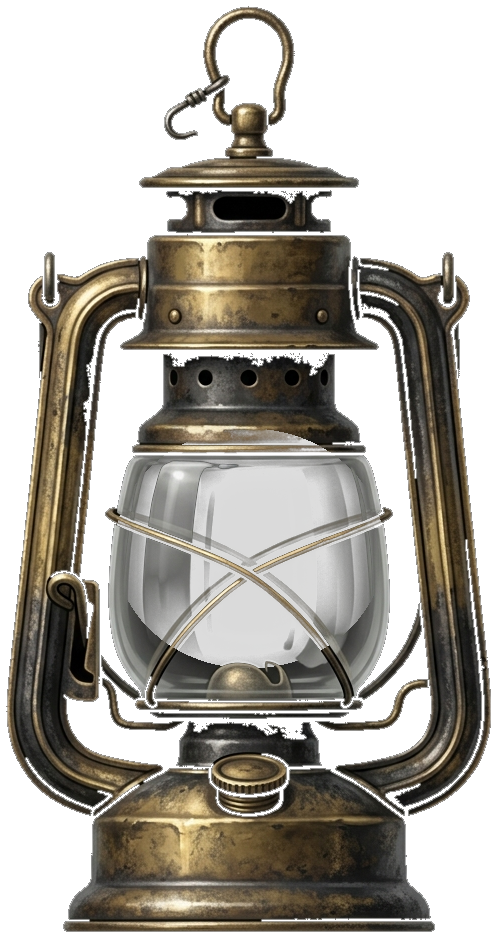

De donkere gangen van de stoomboot
GEIL
Sinterklaas cannot go below deck. You can. Five anime body pillows on the altar and the boat comes safely ashore.

Mr. Geil hunts by sight and sound, and he remembers where he last saw you. Break his line of sight and go quiet and he loses you — but your torch makes you visible from nearly twice as far, sprinting can be heard across half the ship, and tearing a pakje open is the loudest thing you can do. Sint sends you down with a lantaarntje whose flame ticks faster the nearer he gets — how near, never which way. The pakjes, his berth, the round he walks and the dead lanterns are dealt fresh every run.
Or take two to four of you down there. Co-op and he hunts all of you at once — caught is not dead, it is on the deck waiting for somebody to come and get you. De jacht and one of you is him: no torch, no lantaarntje, just a nose for whoever is making noise. Browser to browser, no server, no account, no install.
Click the dark once and the game takes the pointer: the mouse aims your head, and the torch beam swings along a beat behind it. Esc hands the pointer back and pauses; resuming takes it again.
No mouse at all. A/D swing the whole camera like a ship's wheel and the view stays level, so the run is playable one-handed.
Leave it empty and the boat is dealt again each run. Type a code — or any word — to sail the same one twice.
Meer dan één paar laarzen op het dek
Met z'n allen
Two to four of you, straight from browser to browser — there is no server behind this and there is nothing to install. One of you opens a boat and reads out the five-character code; everybody else types it in. Whoever opened it deals the ship and starts the run.
Read this out, or send the link. It only works while this tab is open.
Everybody sails the boat the host deals.
Trouble connecting?
Two browsers normally reach each other directly and nothing below is needed. If one of you is on a mobile network, behind a work firewall or on a VPN, they may not be able to — and then the traffic has to go through a relay. Free ones exist; the README says where to get one in about two minutes. Only one of you needs to paste it in.
Runs on its own, here, without needing anybody at the other end. It says whether this browser can do it at all, whether your network lets it, and — first of all — whether you are looking at the current version of the page.
Boven dek — hij durft niet mee naar beneden

Sinterklaas
Paused
Ship
MR. GEIL ATE YOU
He found you.
The altar stays cold. The stoomboot sails on without you, and Sinterklaas waits on deck for someone who never comes back up. He is, at last, extra geil.
Ship
HET OFFER IS GEBRACHT
Ship
HET OFFER IS GEBRACHT
Five pakjes torn open in the dark, five soft pillows laid out in a row on the warm altar in het ruim. Mr. Geil has what he wanted. No creaking, no hunting, no shadow looking for you — the hold has gone quiet.
Zie ginds komt de stoomboot: you sail into the light, and the boat comes safely ashore. You survived het ruim.
Ship